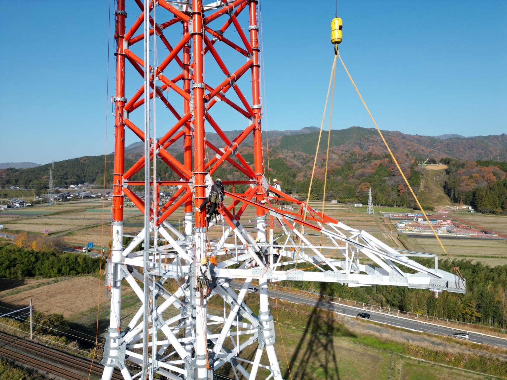

01
社会インフラの根幹を担う
日本全国に約 25 万基ある送電線鉄塔。私たちが組み上げる一基一基が、 街の灯り、工場の機械、家庭のあらゆる電化製品を動かす電気の通り道になります。
CAREERS 採用
送電線鉄塔組立の仕事を、若い世代へ。 私たちの仕事は、暮らしの電気を支える鉄塔を一基ずつ組み上げていくことです。
OUR JOB 仕事の魅力
01
日本全国に約 25 万基ある送電線鉄塔。私たちが組み上げる一基一基が、 街の灯り、工場の機械、家庭のあらゆる電化製品を動かす電気の通り道になります。
02
数十メートルから百メートル超の鉄塔を組み立てる技術は、簡単に身につくものではありません。 台棒工法・クレーン工法・揚重計画・安全管理 — 一つひとつ学びながら、職人として成長していけます。
03
業界経験 45 年以上の会長 (創業者)のもと、創業から積み上げてきた技術と安全文化を、 次の世代に確実に引き継いでいく。若手の挑戦を歓迎する社風です。
WELCOME こんな方を
※ 普通自動車免許があれば、必要な資格は入社後の研修・実務を通じて取得していけます。未経験の方も歓迎です。
